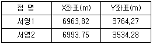
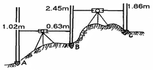
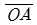
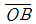
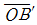
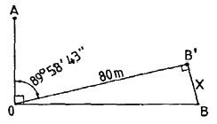
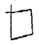
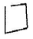
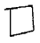
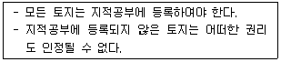

지적산업기사 (2010-03-07 기출문제)
1과목: 지적측량
1. 경위의 측량방법에 따른 세부측량의 기준에 대한 설명으로 옳지 않은 것은?
- 거리측정단위는 1cm로 한다.
- 연직각의 관측은 정반으로 1회 관측한다.
- 1방향각의 측각공차는 60초 이내다.
- 축척변경 시행지역의 측량결과도는 1/1000 으로 작성한다.
(정답률: 45%)

2. 경계점좌표등록부를 갖춰 두는 지역에 있는 각 필지의 경계점을 측정할 때에 좌표를 산출하는 방법에 해당하지 않는 것은? (단, 필지의 경계점이 지형지물에 가로막혀 경위의를 사용할 수 없는 경우는 고려하지 않는다.)
- 도선법
- 방사법
- 교회법
- 현형법
(정답률: 80%)
3. 지번 및 지목을 제도하는 때에 지번과 지목의 글자간격은 글자크기의 어느 정도를 띄어서 제도하는가?
- 글자크기의 1/2
- 글자크기의 1/3
- 글자크기의 1/4
- 글자크기의 1/1
(정답률: 79%)
4. 지적삼각보조점측량을 하기 위한 기지점의 좌표가 아래와 같을 때 서영1에서 서영2로의 방위각과 두 점 간의 거리가 모두 옳은 것은?

- 82˚ 35′ 08″, 231.93m
- 277˚ 24′ 52″, 229.99m
- 277˚ 24′ 52″, 231.93m
- 82˚ 36′ 08″, 229.99m
(정답률: 44%)
5. 다음 중 우연오차에 대한 설명으로 옳지 않은 것은?
- 오차의 원인이 명확하지 않은 경우가 있다.
- 확률에 근거하여 통계적으로 오차를 처리한다.
- 우연오차는 부정오차(random error)라고도 한다.
- 같은 크기의 (+)오차가 (-)오차보다 자주 발생한다.
(정답률: 70%)
6. 다음 중 직각좌표의 기준이 되는 직각좌표계 원점에 해당하지 않는 것은?
- 동부좌표계 원점 : 북위 38˚ 선과 동경 129˚ 선의 교점
- 중부좌표계 원점 : 북위 38˚ 선과 동경 127˚ 선의 교점
- 서부좌표계 원점 : 북위 38˚ 선과 동경 125˚ 선의 교점
- 남부좌표계 원점 : 북위 38˚ 선과 동경 123˚ 선의 교점
(정답률: 73%)
7. 다음 중 지적측량의 구분이 옳은 것은?
- 기초측량, 세부측량
- 확정측량, 세부측량
- 기초측량, 삼각측량
- 세부측량, 삼각측량
(정답률: 88%)
8. 다음 중 지적도근점을 구성하여야 하는 도선으로 적합하지 않은 것은?
- 결합도선
- 폐합도선
- 개방도선
- 왕복도선
(정답률: 85%)
9. 도선법에 따른 지적도근점의 각도관측을 할 때에 오차의 배분 방법 기준으로 옳은 것은?
- 측선장에 비례하여 각 측선의 관측각에 배분한다.
- 측선장에 반비례하여 각 측선의 관측각에 배분한다.
- 변의 수에 비례하여 각 측선의 관측각에 배분한다.
- 변의 수에 반비례하여 각 측선의 관측각에 배분한다.
(정답률: 52%)
10. 두 변의 길이가 각각 65.26m, 57.45m이고 끼인각의 크기가 62˚ 36′ 40″ 인 삼각형의 면적은 얼마인가?
- 1445.5 m2
- 1554.5 m2
- 1664.5 m2
- 1775.5 m2
(정답률: 61%)
11. 경계점좌표등록부 시행지역 외의 지역에서 경계점에 대한 지적측량성과와 검사성과의 연결교차 허용범위는 얼마인가? (단, 축척이 1/3000인 지역이다.)
- 0.30m 이내
- 0.60m 이내
- 0.90m 이내
- 1.20m 이내
(정답률: 35%)
12. 다각망도선법에 따른 지적삼각보조점의 관측 및 계산에서 도선별 평균 방위각과 관측방위각과의 폐색오차는 얼마 이내로 하여야 하는가? (단, n은 폐색변을 포함한 변의 수를 말한다.)
- ±10√n초 이내
- ±20√n초 이내
- ±30√n초 이내
- ±40√n초 이내
(정답률: 75%)
13. 다음 중 두 점 간의 실거리 300m를 도상에 6mm로 표시한 도면의 축척은 얼마인가?
- 1/20000
- 1/25000
- 1/50000
- 1/100000
(정답률: 75%)
14. 축척 1/1200 지역에서 전자면적측정기에 따른 면적을 도상에서 2회 측정한 결과가 654.8m2 , 655.2m2 이었을 때 평균치를 측정 면적으로 하기 위하여 교차는 얼마 이하이어야 하는가?
- 16m2
- 17m2
- 18m2
- 19m2
(정답률: 62%)
15. 다음 중 경위의측량방법과 교회법에 따른 지적삼각보조점의 관측 및 계산 기준에 관한 설명으로 옳은 것은?
- 관측은 20초독 이상의 경위의를 사용한다.
- 점간거리의 측정은 3회 실시한다.
- 수평각 관측은 3대회의 방향관측법에 따른다.
- 수평각의 1방향각 측각공차는 50초 이내이다.
(정답률: 66%)
16. 다음 중 지적도근점측량의 방법 및 기준에 대한 설명으로 옳은 것은?
- 다각망도선법으로 지적도근점측량을 하는 경우 1도선의 거리는 평균 10km 이하로 한다.
- 경위의측량방법에 따라 도선법으로 지적도근점측량을 하는 경우 1도선의 점의 수는 20점 이하로 한다.
- 지적도근점의 번호는 영구표지를 설치하는 경우 시행지역별로 아라비아숫자로 구성된 일련번호를 부여한다
- 전파기측량방법에 따라 다각망도선법으로 지적도근점측량을 하는 경우 3점 이상의 기지점을 포함한 결합다각방식에 따른다.
(정답률: 42%)
17. 다음 중 토지의 이동에 따른 도면의 제도 방법 기준으로 옳지 않은 것은?
- 말소된 경계를 다시 등록하는 경우에는 말소표시의 교차선 중심점을 기준으로 직경2 내지 3밀리미터의 붉은 색 원으로 제도한다.
- 신규등록ㆍ등록전환 및 등록사항정정으로 도면에 경계ㆍ지번 및 지목을 새로이 등록하는 경우에는 이미 비치된 도면에 제도한다.
- 등록전환하는 경우에는 임야도의 그 지번 및 지목을 말소하고, 그 내부를 붉은색으로 엷게 채색한다.
- 도곽선에 걸쳐있는 필지가 분할되어 도곽선 밖에 분할 경계가 제도된 경우에는 도곽선 내에 제도된 필지의 경계를 말소하고, 해당 도곽선 밖에 경계ㆍ지번 및 지목을 제도한다.
(정답률: 28%)
18. 다음 중 지적측량을 하여야 하는 경우와 거리가 먼 것은?
- 지적측량성과를 검사하는 경우
- 지적기준점을 정하는 경우
- 분할된 도로의 필지를 합병하는 경우
- 경계점을 지상에 복원하는 경우
(정답률: 81%)
19. 다음 중 평판측량방법에 따른 세부측량을 교회법으로 하는 경우의 기준으로 옳지 않은 것은?
- 3방향 이상의 교회에 따른다.
- 방향각의 교각은 30˚ 이상 150˚ 이하로 한다.
- 전방교회법 또는 후방교회법에 의한다.
- 광파조준의를 사용하는 경우 방향선의 도상길이는 30cm이하로 할 수 있다.
(정답률: 62%)
20. 축적이 1/3,000인 지역의 토지를 등록전환 하는 경우 임야대장의 면적과 등록전환될 면적의 오차 허용범위를 계산하기 위한 축척분모는 얼마로 하여야 하는가?
- 1000
- 1200
- 3000
- 6000
(정답률: 47%)
2과목: 응용측량
21. 다음 노선측량의 작업과정 중 몇 개의 후보노선 가운데서 가장 좋은 1개의 노선을 결정하고 공사비를 개산(槪算)할 목적으로 실시하는 것은?
- 답사
- 예측
- 실측
- 공사측량
(정답률: 67%)
22. 높이가 250m인 어떤 굴뚝이 사진축척 1:10000인 수직사진상에서 연직점으로부터 거리가 60mm 일 때, 비고에 의한 변위량은? (단, 초점거리=150mm)
- 1mm
- 6mm
- 10mm
- 60mm
(정답률: 45%)
23. 수준측량에서 시준거리를 일정하게 하여 동일 조건하에서 측량하면 그 오차는 이론적으로 무엇에 비례하게 되는가?
- 관측횟수의 역수
- 관측점수의 제곱
- 관측값의 2배수
- 관측거리의 제곱근
(정답률: 68%)
24. 철도, 도로 등의 단곡선 설치에서 접선과 현이 이루는 각을 이용하여 곡선을 설치하는 방법은?
- 편각법
- 중앙종거법
- 접선편거법
- 접선지거법
(정답률: 66%)
25. 그림과 같이 직접 수준측량을 시행한 경우에 A점의 표고가 245.67m 이라면 C점의 표고는 얼마인가?

- 246.65m
- 247.28m
- 247.91m
- 248.51m
(정답률: 52%)
26. “완화 곡선의 접선은 시점에서는 ( A )에, 종점에서는 ( B )에 접한다.”에서 (A, B)로 알맞은 것은?
- (원호, 직선)
- (원호, 원호)
- (직선, 원호)
- (직선, 직선)
(정답률: 75%)
27. 출발점에 세운 표척과 도착점에 세운 표척을 갈게 하는 이유는?
- 표적의 상태(마모 등) 로 인한 오차를 소거 한다.
- 정중의 불량으로 인한 오차를 소거한다.
- 수직축의 기울어짐으로 인한 오차를 제거한다.
- 기포관의 강도불량으로 인한 오차를 제거한다.
(정답률: 52%)
28. 경사사진을 엄밀 수직사진으로 변환 시키는 작업은?
- 상호표정
- 편위수정
- 기복변위
- 대지표정
(정답률: 39%)
29. 깊이 50m, 직경 5m인 수직 터널에 의해 터널 내외를 연결하는 측량방법으로 가장 효율적인 것은?
- 삼각 구분법
- 폴과 지거법에 의한 방법
- 데오도라이트와 추선에 의한 방법
- 레벨과 함척에 의한 방법
(정답률: 71%)
30. 그림과 같이

에 직각인 직선
를 관측하기 위해 O점에 Transit을 세우고 ∠AOB′를 반복법으로 관측하여 수평각 89° 58′ 43″ 를 관측하였다면 B'점에서 에 직각 방향으로 약 얼마만큼 이동하면 ∠AOB 가 직각이 되는가? (단,
에 직각 방향으로 약 얼마만큼 이동하면 ∠AOB 가 직각이 되는가? (단, 
= 80m)
- 2cm
- 3cm
- 4cm
- 5cm
(정답률: 44%)
31. 항공삼각측량의 표정에 사용되지 않는 것은?
- 공면조건식
- 부등각사상(Aine) 변환식
- 동선조건식
- 뉴튼(Newton) 변환식
(정답률: 55%)
32. 항공삼각측량방법 중에서 해석적으로 종횡접합모형(block) 조정을 하는 방법이 아닌 것은?
- 다항식조정법
- 사선조정법
- 독립모델조정법
- 광속조정법
(정답률: 67%)
33. 지상의 A점의 표고가 300m, B점의 표고가 800m이며, AB의 경사가 25%일 때 두 지점의 1:50000 지형도상 거리는?
- 2cm
- 4cm
- 6cm
- 8cm
(정답률: 59%)
34. 항공사진을 편위수정시 정밀을 요하거나 해석적 편위수정에 필요한 표정점의 최소 수는 몇 개인가?
- 3개
- 4개
- 5개
- 6개
(정답률: 39%)
35. 다음 중 삼각점의 신설을 위한 가장 적합한 GPS 측량방법은?
- 정지측량방식(static)
- DGPS(Differential GPS)
- Stop & Go 방식
- RTK(Real Time Kinematic)
(정답률: 78%)
36. 항공사진측량의 특징에 대한 설명으로 옳지 않은 것은?
- 정략적 및 정성적 측정이 가능하다.
- 대상물이 움직이더라도 그 상태를 분석할 수 있다.
- 축척이 작을수록, 광역일수록 경제적이다.
- 기상조건에 지장을 받지 않는다.
(정답률: 60%)
37. 원곡선에서 곡선길이가 150.39m이고 곡선방경이 200m일 때 교각은?
- 30° 12′
- 43° ⑤′
- 45° 25′
- 53° 35′
(정답률: 58%)
38. 위성측량에서 GPS의 의사거리(Pseudo range)에 대한 설명으로 옳은 것은?
- 시간 오차 등 각종 오차를 포함하고 있는 계산된 거리이다.
- 모든 오차가 제거된 최종 확정된 거리이다.
- 수신기와 가상의 기준국 간에 실제 거리이다.
- 측정된 위성과 수신기 간의 거리에서 시간 오차가 보정된 거리이다.
(정답률: 58%)
39. 터널 내가 넓은 경우 세부측량 방법으로 적당한 것은?
- 형각법
- 방사법
- 지거법
- 삼각법
(정답률: 52%)
40. 경지정리 확정 측량을 위한 항공사지측량을 실시할 때 수직사진은 일반적으로 화면의 경사각을 몇 도 까지 허용하는가?
- 1°
- 3°
- 5°
- 7°
(정답률: 63%)
3과목: 토지정보체계론
41. 다음 중 위상모형(topology)의 특징에 해당하지 않는 것은?
- 인접성(neighborhood)
- 연결성(connectivity)
- 표준선(generalization)
- 계급성(hierarchy)
(정답률: 61%)
42. 토지정보를 공간자료와 속성자료로 분류할 때 다음 중 공간자료에 해당하는 것으로만 나열된 것은?
- 지적도, 임야도
- 지적도, 토지대장
- 토지대장, 임야대장
- 토지대장, 공유지연명부
(정답률: 63%)
43. 다음 중 과거 건설교통부가 운영하였던 필지중심토지정보시스템의 약호로 옳은 것은?
- LMIS
- KMIS
- PBLIS
- KLIS
(정답률: 68%)
44. 다음 중 데이터베이스관리시스템이 파일시스템에 비하여 갖는 단점에 해당하는 것은?
- 자료의 일관성이 확보되지 않는다.
- 자료의 중복성을 피할 수 없다.
- 사용자별 자료접근에 대한 권한 부여를 할 수 없다.
- 일반적으로 시스템 도입비용이 비싸다.
(정답률: 83%)
45. 다음 중 토지정보시스템에 대한 설명으로 가장 거리가 먼 것은?
- 법률적, 행정적, 경제적, 기초 하에 토지에 관한 자료를 체계적으로 수집한 시스템이다.
- 혐의의 개념은 지적을 중심으로 지적공부에 표시된 사항을 근거로 하는 시스템이다.
- 지상 및 지하의 공급시설에 대한 자료를 효율적으로 관리하는 시스템이다.
- 토지 관련 문제의 해결과 토지정책의 의사결정을 보조 하는 시스템이다.
(정답률: 65%)
46. 다음 중 지적 전산용으로 사용하는 하드웨어에 해당하지 않는 것은?
- 개인용 컴퓨터(PC)
- 플로터
- COGO
- 프린터
(정답률: 57%)
47. 다음 중 한국토지정보시스템의 구축에 따른 기대 효과로 보기 어려운 것은?
- 다양하고 입체적인 토지정보를 제공할 수 있다.
- 민원처리 기간을 단축하고 온라인으로 서비스를 제공할 수 있다.
- 각 부서 간의 다양한 토지 관련 정보를 공동으로 활용하여 업무의 효율을 높일 수 있다.
- 건축물의 유지 및 보수 현황의 관리가 용이해진다.
(정답률: 79%)
48. 다음 중 다목적 지적제도의 3대 구성 요소에 해당하지 않는 것은?
- 측지기준망
- 기본도
- 중첩도
- 토지소유자
(정답률: 79%)
49. 다음 중 지도를 스캐닝하여 얻어지는 도형자료의 유형은?
- 지적데이터
- 소성데이터
- 래스터데이터
- 벡터데이터
(정답률: 77%)
50. 다음 중 도로, 전력, 상하수도 등과 같이 연결성을 기반으로 하는 분야에서 최적 경로, 효율적인 자원의 이동과 배치 등을 산출하는 분석기법은?
- 표면 분석
- 네트워크 분석
- 중첩 분석
- 인접성 분석
(정답률: 54%)
51. 다음 중 공간자료에 대한 설명으로 옳지 않은 것은?
- 공간자료는 일반적으로 도형자료와 속성자료로 구분한다.
- 도형자료는 점, 선, 면의 형태로 구성된다.
- 도형자료에는 통계자료, 보고서, 범례 등이 포함된다.
- 속성자료는 일반적으로 문자나 숫자로 구성되어 있다.
(정답률: 74%)
52. 다음 중 디지타이징 방식과 비교하여 스캐닝 방식이 갖는 장점에 대한설명으로 옳지 않은 것은?
- 일반적으로 작업의 속도가 빠르다.
- 작업자의 숙련도가 작업에 미치는 영향이 덜한 편이다.
- 하드웨어와 소프트웨어의 구입 비용이 덜 소요된다.
- 다량의 지도를 입력하는 작업에 유리하다.
(정답률: 69%)
53. 다음 중 래스터데이터의 압축방법에 해당하지 않는 것은?
- 체인코드(Chain code)기법
- 스틸코드(Steel code)기법
- 블록코드(Block code)기법
- 사자수형(Quadtree)
(정답률: 65%)
54. 다음 중 필지중심토지정보시스템에 해당하지 않는 것은?
- 지적측량시스템
- 부동산행정시스템
- 지적공부관리시스템
- 지적측량성과작성시스템
(정답률: 77%)
55. 다음 중 자료 간의 공통 필드에 의해 논리적인 연계를 구축함으로써 효율적으로 자료를 관리할 수 있게 하며 관련된 데이터 필드가 존재하는 한 정보검색을 위한 질의 형태에 제한이 없는 장점을 지닌 데이터 모델은?
- 계층형 데이터 모델
- 관계형 데이터 모델
- 네트워크형 데이터 모델
- 객체지향형 데이터 모델
(정답률: 56%)
56. 다음 중 자료구조의 성격이 다른 하나는?
- 셀(Cell)
- 픽셀(Pixel)
- 노드(Node)
- 그리드(Grid)
(정답률: 50%)
57. 다음 중 지적전산정보시스템의 사용자권한 등록파일에 등록하는 사용자의 권한 구분으로 옳지 않은 것은?
- 사용자의 신규등록
- 법인의 등록번호 업무관리
- 개별공시지가 변동의 관리
- 토지등급 및 기준 수확량등급 변동의 관리
(정답률: 48%)
58. 다음 중 LIS에서 사용하는 공간자료의 중첩 유형인 UNION과 INTERSECT에 대한 설명으로 옳지 않은 것은?
- UNION - 두 개 이상의 레이어들에 대하여 OR 연산자를 적용하여 합병하는 방법이다.
- UNION - 기준이 되는 레이어의 모든 특징은 결과 레이어에 포함된다.
- INTERSECT - 불린(BOOLEAN)의 AND 연산자를 적용한다.
- INTERSECT - 입력 레이어의 모든 정보는 결과 레이어에 포함된다.
(정답률: 48%)
59. 다음 중 지적전산화의 목적으로 옳지 않은 것은?
- 토지소유자의 현황 파악
- 토지관련 정책 자료의 다목적 활용
- 지적 관련 민원의 신속한 처리
- 전산화를 통한 중앙 통제권 강화
(정답률: 87%)
60. 다음 중 디지타이징 및 벡터자료의 편집에서 발생하는 오류의 유형으로 옳지 않은 것은?
- spike –

- undershoot –

- overshoot –

- sliver polygon –
(정답률: 73%)
4과목: 지적학
61. 다음 중 지적제도의 분류 방법이 다른 하나는?
- 세지적
- 법지적
- 수치지적
- 다목적지적
(정답률: 78%)
62. 다음 중 일반적으로 지번을 부여하는 방법에 해당하지 않은 것은?
- 분수식
- 기번식
- 자유부번식
- 문장식
(정답률: 66%)
63. 다음 중 경계의 특징에 대한 설명으로 옳지 않은 것은?
- 필지 사이에는 1개의 경계가 존재한다.
- 경계는 크기가 없는 기하학적인 의미를 갖는다.
- 경계는 면적을 갖고 있으므로 분할이 가능하다.
- 경계는 경계점 사이를 직선으로 연결한 것이다.
(정답률: 59%)
64. 다음 중 아래의 설명에 해당하는 토지등록의 유형은?

- 적극적 등록제도
- 실질적 심사제도
- 권원등록제도
- 날인증서등록제도
(정답률: 82%)
65. 다음 중 지적을 과세의 기초를 제공하기 위하여 부동산의 규모, 가치 및 소유권을 등록한 공부라고 정의한 학자 또는 기관으로 옳은 것은?
- U. S. NATIONAL RESEARCH COUNCIL
- S. R. SIMPSON
- A. TOFFLER
- BRITISH ORDINANCE SURVEY
(정답률: 56%)
66. 다음 중 토지조사사업의 주된 내용으로 거리가 먼 것은?
- 토지의 소유권 조사
- 토지의 행정구역 조사
- 토지의 외모 조사
- 토지의 가격 조사
(정답률: 59%)
67. 다음 중 토지과세 및 토지거래의 안전을 도모하여 토지 소유권의 보호를 주요 목적으로 하는 지적제도는?
- 법지적
- 경제지적
- 과세지적
- 유사지적
(정답률: 88%)
68. 토지등록부의 편성방법 중 연대적 편성주의에 대한 성명으로 옳은 것은?
- 토지의 등록에 있어 개개의 토지를 중심으로 토지등록부를 편성하는 것으로 우리나라도 이 제도를 따르고 있다.
- 토지소유자별로 토지를 등록하여 동일 소유자에 속하는 모든 토지는 당해 소유권자의 대장에 기록하는 방식이다.
- 어떠한 특별한 기준을 두지 않고 당사자의 신청 순서에 따라 순차적으로 기록해 가는 것으로 레코딩 시스템이 이에 속한다.
- 토지대장에 있어서 소유자별 토지등록카드와 지번별 목록, 성명별 목록을 동시에 등록하는 방식이다.
(정답률: 64%)
69. 다음 중 근대적 세지적의 완성과 소유권제도의 확립을 위한 지적제도 성립의 전환점으로 평가되는 역사적인 사건은?
- 윌리암 1세의 영국 둠스데이 측량 시행
- 나폴레옹 1세의 프랑스 토지관리법 시핼
- 솔리만 1세의 오스만제국 토지법 시핼
- 디오클레시안 황제의 로마제국 토지 측량 시행
(정답률: 84%)
70. 다음 중 지번의 역할에 해당하는 것은?
- 토지의 크기파악
- 토지의 위치추측
- 토지개발계획의 기초
- 토지이용현황 파악
(정답률: 54%)
71. 다음 중 고려시대의 지적관리기구에 해당하지 않는 것은?
- 호부
- 급전도감
- 정치도감
- 식목도감
(정답률: 47%)
72. 다음 중 19세기 전후로 양전개정론을 주장한 사람이 아닌 자는?
- 김정호
- 정약용
- 서유구
- 이기
(정답률: 66%)
73. 다음 중 양안에 토지를 표시함에 있어 양전의 순서에 따라 1필지마다 천자문(千字文)의 자(字)번호를 부여하였던 제도는?
- 수등이척제
- 결부법
- 일자오결제
- 집결제
(정답률: 78%)
74. 다음 중 토지조사사업에서 사정(査定)하였던 사항은?
- 소유자
- 지번
- 지목
- 면적
(정답률: 50%)
75. 경국대전의 호전(戶典)에 따르면 조새의 정확성을 유지하기위하여 양안을 개편하도록 매 몇 년마다 한 번씩 양전을 실시하도록 하였는가?
- 5년
- 10년
- 15년
- 20년
(정답률: 75%)
76. 다음 중 토지조사사업 당시 불복신립 및 재결을 행하는 토지소유권의 확정에 관한 최고의 심의기관은?
- 도지사
- 임시토지조사국장
- 고등토지조사위원회
- 임야조사위원회
(정답률: 82%)
77. 다음 중 토지조사사업 당시 일반적으로 지번을 부여하지 않았던 지목에 해당되는 것은?
- 성첩
- 공원지
- 지소
- 분묘지
(정답률: 57%)
78. 다음 중 지적의 특성으로 옳지 않은 것은?
- 안정성
- 간편성
- 정확성
- 추정성
(정답률: 81%)
79. 다음 중 임야조사사업에서 사정한 임야의 구획선을 무엇이라고 하였는가?
- 지세선
- 사정선
- 임야선
- 경계선
(정답률: 59%)
80. 다음 중 1720년부터 1723년 사이에 이탈리아 밀라노의 지적도 제작 사업에서 전 영토를 측량하기 위해 사용한 지적도의 축척으로 옳은 것은?
- 1/1200
- 1/2000
- 1/2400
- 1/3000
(정답률: 50%)
5과목: 지적관계
81. 현행 우리나라의 지목은 총 몇 개의 종류로 구분하여 정하는가?
- 24개
- 26개
- 28개
- 30개
(정답률: 88%)
82. 다음 중 지적소관청이 토지의 표시 변경에 관한 등기를 할 필요가 있는 경우, 관할 등기관서에 그 등기를 촉탁하여야 하는 대상에 해당하지 않는 것은?
- 분할
- 신규등록
- 바다로 된 토지의 말소
- 행정구영 개편에 따른 지번변경
(정답률: 54%)
83. 다음 중 지적측량수행자의 성실의무로 옳은 것은? (단, 지적측량수행자는 소속 측량기술자를 포함한다.)
- 지적측량수행자는 배우자가 소유한 토지에 대하여 지적측량을 할 수 있다.
- 지적측량수행자는 정당한 사유없이 지적측량 신청을 거부할 수 없다.
- 지적측량수행자는 지적측량수수료 외에 그 업무와 관련된 대가를 받으면 아니된다.
- 지적측량수행자는 둘 이상의 측량업자에게 소속될 수 있다.
(정답률: 49%)
84. 지적소관청이 복구자료의 조사 또는 복구측량 등이 완료되어 지적공부를 복구하려는 경우에 복구하려는 토지의 표시 등을 게시하는 장소와 기간 기준이 모두 옳은 것은?
- 일간신문, 1일간
- 소관청과 등기소, 30일간
- 시・군・구 게시판, 10일 이상
- 시・군・구 게시판, 15일 이상
(정답률: 80%)
85. 과수원으로 이용되고 있는 1000m2 면적의 토지에 지목이 대(岱)인 30m2 면적의 토지가 포함되어 있을 경우 필지의 결정 방법으로 옳은 것은? (단, 토지의 소유자는 동일하다.)
- 종된 용도의 토지 면적이 주된 용도의 토지면적의 10%미만이므로 전체를 1필지로 한다.
- 종된 용도의 토지의 지목이 대(岱)이므로 1필지로 할 수 없다.
- 지목이 대(岱)인 토지의 지가가 더 높으므로 전체를 1필지로 한다.
- 1필지로 하거나 필지를 달리하여도 무방하다.
(정답률: 64%)
86. 새로 조성된 토지와 지저거공부에 등록되어 있지 아니한 토지를 지적공부에 등록하는 것을 무엇이라고 하는가?
- 등록전환
- 지목변경
- 신규등록
- 축척변경
(정답률: 84%)
87. 다음 중 토지대장에 등록하여야 하는 사항이 아닌 것은?
- 지목
- 면적
- 토지의 고유번호
- 소유권 지분
(정답률: 70%)
88. 다음 중 지목을 도로로 분류할 수 없는 것은?
- 공장 안에 설치된 통로
- 2필지 이상에 진입하는 통로로 이용되는 토지.
- 고속도로의 휴게소 부지
- 도로법에 따라 도로로 개설된 토지
(정답률: 73%)
89. 다음 중 현생 지적도의 축척으로 사용하지 않는 것은?
- 1/500
- 1/1000
- 1/2000
- 1/3000
(정답률: 66%)
90. 다음 중 지상 경계의 구획을 형성하는 구조물 등의 소유자가 다른 경우 지상 경계를 새로이 결정하는 기준으로 옳은 것은?
- 연접되는 토지 간에 높낮이 차이가 없는 경우 구조물의 중아에 지상 경계를 결정한다.
- 도로에 절토된 부분이 있는 경우 그 경사면의 상단부를 지상 경계로 결정한다.
- 연접되는 토지 간에 높낮이 차이가 있는 경우 구조물의 하단부를 지상 경계로 결정한다.
- 소유권에 따라 지상 경계로 결정한다.
(정답률: 45%)
91. 다음 중 지적측량을 하여야 하는 토지이동에 해당하지 않는 것은?
- 신규등록
- 등록전환
- 분할
- 지목변경
(정답률: 74%)
92. 다음 중 합병 신청을 할 수 없는 토지가 아닌 것은?
- 합병하려는 토지의 지적도 및 임야도의 축척이 서로 다른 경우
- 합병하려는 각 필지의 지반이 연속되지 아니한 경우
- 합병하려는 토지가 등기된 토지와 등기되지 아니한 토지인 경우
- 합병하려는 토지의 지번부여지역이 동일하고 토지소유자가 동일한 토지인 경우
(정답률: 81%)
93. 중앙지적위원회는 위원장과 부위원장을 포함하여 몇 명으로 구성하는가?
- 3명 이상 7명 이하
- 5명 이상 10명 이하
- 7명 이상 12명 이하
- 15명 이상 20명 이하
(정답률: 81%)
94. 다음 지번의 결번 사유 중, 지적소관청이 결번대장에 그 사유를 적어 영구히 보존해야 하는 경우에 해당하지 않는 것은?
- 지구계 분할
- 도시개발사업의 시행
- 축척변경
- 행정구역의 변경
(정답률: 46%)
95. 지적전산자료의 이용 또는 활용신청에 대한 심사 신청을 받은 관계 중앙행정기관의 장이 심사하여야 할 사항으로 거리가 먼 것은?
- 신청내용의 타당성, 적합성 및 공익성
- 자료의 목적 외 사용 방지 몇 안전관리대책
- 토지정보의 공신력 확보를 위한 정보제공 제한의 적정성
- 개인의 사생활 침해 여부
(정답률: 43%)
96. 토지소유자가 신규등록을 신청할 때에 신규등록 사유를 적은 신청서에 첨부하여야 할 서류에 해당하지 않는 것은?
- 법원의 확정판결서 정본 또는 사본
- 공유수면매립법에 따른 준공검사확인증 사본
- 소유권을 증명할 수 있는 서류의 사본
- 사업인가서와 지번별조서
(정답률: 62%)
97. 다음 중 축척변경에 따른 청산금 산정에 대한 설명이 옳지 않은 것은?
- 지적소관청은 축척병경에 관한 측량변경에 관한 측량을 한 결과 측량 전에 비하여 면적의 증감이 있는 경우에는 그 증감면적에 대하여 청산을 하여야 한다.
- 토지소유자 전원이 청산하지 아니하기로 합의하여 서면을 제출한 경우에도 지적소관청은 축척변경에 따른 중감면적에 대하여 청산을 하여야 한다.
- 지적소관청이 축척변경에 따른 증감면적에 대하여 청산을 하는 경우 축척변경위원회의 의결을 거쳐 지번별 제곱미터당 금액을 정하여야 한다.
- 지적소관청은 청산금을 산정하였을 때에는 청산금조서를 작성하고, 청산금이 결정되었다는 뜻을 15일 이상 공고하여 일반인이 열람할 수 있게 하여야 한다.
(정답률: 65%)
98. 다음 중 공유지연명부의 등록사항에 해당하지 않는 것은?
- 토지의 고유번호
- 전유부분의 건물표시
- 지번
- 소유자의 명칭
(정답률: 55%)
99. 다음 중 도시개발사업과 관련한 토지의 이동이 이루어진 것으로 보는 시기 기준은?
- 토지개발완료 신고서가 도착한 때
- 도시개발사업 공사에 착수하였을 때
- 도지개발사업의 설계가 완료된 때
- 토지의 형질변경 등의 공사가 준공된 때
(정답률: 62%)
100. 다음 중 경계점좌표등록부를 갖춰두는 지역의 지적도에 등록하는 사항은?
- 편장에서 실측에 의한 경계점 간의 거리
- 좌표에 의하여 계산된 경계점 간의 거리
- 도상에서 실측한 거리
- 면적측정에 의하여 산정한 거리
(정답률: 63%)